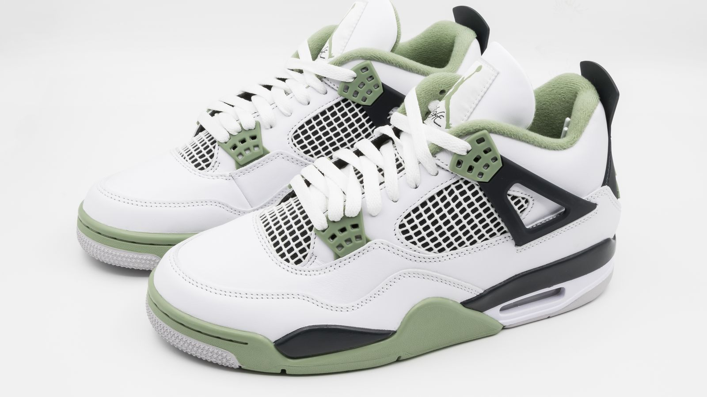

シグネチャーシューズは「物語」でできている
クッションの反発係数で、人はスニーカーに並ばない。行列をつくらせるのは、いつだってスペックではなく物語だ。

足元に宿るのは、選手の人生
シグネチャーシューズの面白さは、デザインの細部に選手の人生が織り込まれていることにある。生まれた街の風景、背番号の由来、家族へのメッセージ、キャリアの転機。ヒールやインソールに忍ばせたディテールをファンが「読解」し、SNSで共有する。シューズはもはやプロダクトではなく、読み物なのだ。
エア・ジョーダンが確立したこの方程式は、コービー、レブロン、カリーへと受け継がれ、それぞれのブランドがそれぞれの語り口を磨いてきた。低くカットされたシルエットひとつ、カラーウェイの名前ひとつに意味があり、リリースのたびにその意味が語られる。
「履く」から「語る」へ
重要なのは、この物語が買った後も続くことだ。どのカラーを選ぶか、何と合わせるか、履くのか飾るのか。所有者の数だけ解釈が生まれ、二次市場では物語の希少性がそのまま価格になる。
つまりシグネチャーシューズとは、ブランドと選手とファンが共同で書き続ける長編小説だ。そして、これはスニーカーに限った話ではない。人が何かを愛するとき、そこには必ず物語がある。僕たちがコンテンツをつくるときに立ち返るのは、いつもこの原則だ。